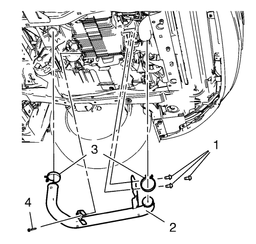
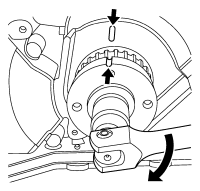
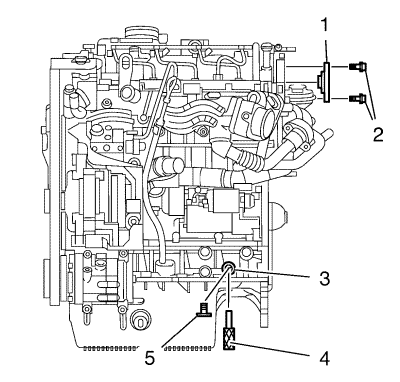
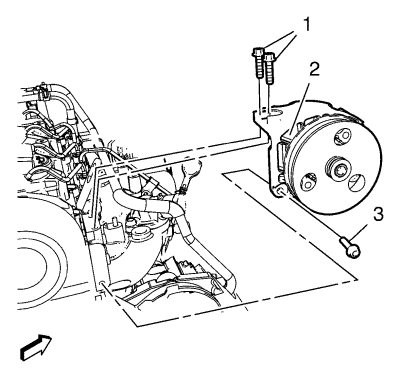
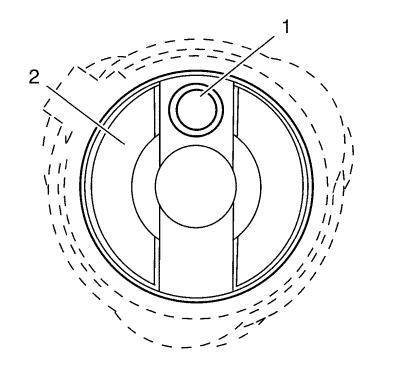
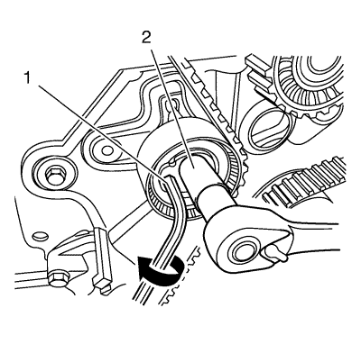
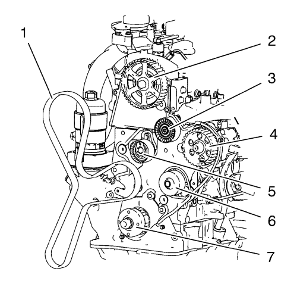
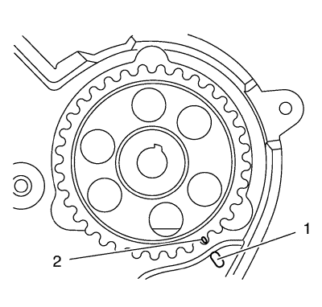
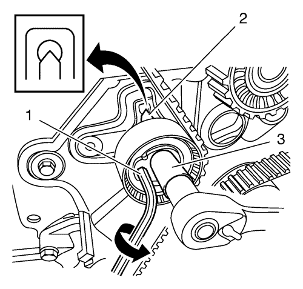

Sustitución de la correa de distribución
Herramientas especiales
| • | EN-48245 Herramienta de bloqueo del árbol de levas |
| • | EN-48246 Herramienta de bloqueo del cigüeñal |
Si desea informarse sobre herramientas regionales equivalentes, consultar Herramientas especiales .
Procedimiento de desmontaje
- Desmonte la cubierta del motor. Consultar Sustitución de la cubierta del motor .
- Extraiga el conjunto del filtro de aire. Consultar Sustitución del filtro de aire .
- Suba el vehículo a la altura máxima. Consultar Elevación y soporte en alto del vehículo .
- Desmonte el aislante del compartimento delantero. Consultar Sustitución del aislamiento del compartimento delantero .
- Desmonte el generador y la correa del compresor del aire acondicionado y la bomba de la servodirección. Consultar Sustitución de la correa de la bomba de la dirección asistida y del compresor del aire acondicionado y el generador .
- Retire el dispositivo tensor de la correa de accionamiento. Consultar Sustitución del dispositivo tensor de la correa de accionamiento .
- Retire la polea loca de la correa. Consultar Sustitución de la polea loca de la correa de distribución .

- Desmonte el tornillo (4) del tubo de aire de entrada del refrigerador de aire de carga.
- Retire las 2 abrazaderas para tubo flexible (3).
- Desmonte los 3 tornillos (1) del tubo de aire de entrada del refrigerador de aire de carga.
- Desmonte el tubo de aire de entrada del intercooler (2).

- Gire el cigüeñal hasta las marcas del piñón del cigüeñal y de la tapa de la bomba de aceite.

- Extraiga el tornillo de cierre de la carcasa inferior del cigüeñal (5).
Monte la herramienta de bloqueo EN-48245 (4) en el orificio de la carcasa inferior del cigüeñal (3). Gire el cigüeñal hasta que la herramienta se acople en él.
- Monte el soporte del motor/cambio. Consulte Montaje del cambio/motor .
- Desmonte el generador y la correa del compresor del aire acondicionado y la bomba de la servodirección. Consultar Sustitución de la correa de la bomba de la dirección asistida y del compresor del aire acondicionado y el generador .
- Retire el dispositivo tensor de la correa de accionamiento. Consultar Retirada del dispositivo tensor de la correa de accionamiento .
- Retire la polea loca de la correa. Consultar Desmontaje de la polea loca de la correa de accionamiento .
- Desmonte la polea loca del cigüeñal. Consultar Sustitución de la polea del cigüeñal .
- Retire la tapa delantera inferior de la correa de distribución. Consultar Desmontaje de la cubierta delantera de la parte inferior de la correa de distribución .
- Baje el vehículo a la altura máxima.
- Desmonte el soporte derecho del motor. Consultar Sustitución del alojamiento del motor - lado derecho .

- Desmonte los tornillos (1, 2) de la bomba de la dirección.
Nota: No extraiga los tubos flexibles de la servodirección.
- Retire la bomba de la dirección (2) de la zona de trabajo.
- Retire la tapa delantera superior de la correa de distribución. Consultar Desmontaje de la cubierta delantera de la parte superior de la correa de distribución .
- Desmonte de la bomba de vacío. Consultar Desmontaje de la bomba de vacío .

Nota:
| • | Examine que el orificio (1) interior del árbol de levas (2) queda encima. |
| • | Examine si el árbol de levas y el cigüeñal están en las posiciones correctas. |
- Gire el árbol de levas (1) hasta la posición mostrada en el gráfico.
- Si las marcas del cigüeñal y el árbol de levas no están alineadas, desmonte la herramienta de bloqueo EN-48245, gire el cigüeñal 360° y monte la herramienta de bloqueo EN-48245. Consulte el paso 11.
- Monte la herramienta de bloqueo EN-48246 (1) para fijar el árbol de levas, monte los 4 tornillos (2) y apriételos a 12 N·m (107 pies pulg.).

- Afloje el tornillo (2) del dispositivo tensor de la correa dentada.
- Gire el tensor de la correa de distribución con una llave hexagonal (1) en sentido horario hasta que se suelte la correa de distribución.

- Retire la correa dentada (1).
Procedimiento de montaje

- Gire el piñón de accionamiento de la bomba de combustible hasta que estén alineadas las marcas (1) y (2).
Nota: Compruebe si la correa de distribución se mueve en el sentido correcto.
Nota: Compruebe que la correa de distribución está tensa durante el montaje.
- Monte la correa de distribución (1) en el siguiente orden:
| 2.1. | Piñón del cigüeñal (7) |
| 2.2. | Polea de la bomba de agua (6) |
| 2.3. | Polea de accionamiento de la bomba de combustible (4) |
| 2.4. | Polea loca de correa de distribución (3) |
| 2.5. | Piñón de accionamiento del árbol de levas (2) |
| 2.6. | Tensor de correa de distribución (5) |

- Gire la lengüeta de la llave hexagonal (1) en sentido antihorario para tensar la correa. Gire hasta que el punto se alinee con la ranura (2).
Precaución:Consulte Precaución con las fijaciones en la sección Prólogo.
- Si se alinea con la ranura (2), apriete el tornillo del tensor de la correa de distribución (3) a 25 N·m (19 lib. pie).
- Desmonte la herramienta de bloqueo EN-48246 (1) y extraiga los tornillos (2).
- Suba el vehículo a la altura máxima.
- Desmonte la herramienta de bloqueo EN-48245 (4) del orificio de la carcasa inferior del cigüeñal (3). Monte el tornillo de cierre (5) de la carcasa inferior del cigüeñal y apriételo a 30 N·m (23 lib. pie).
- Gire el cigüeñal 2 vueltas en el sentido horario y compruebe su posición.
Nota: Si las marcas de alineación no están alineadas, repita el procedimiento hacia adelante y vuelva a comprobar las marcas. La alineación de las marcas es importante para el rendimiento del motor y las emisiones.
- Baje el vehículo a la altura máxima.
- Compruebe la posición del árbol de levas.
Nota:
| • | Compruebe que el orificio (1) del árbol de levas (2) queda encima. |
| • | Examine si el árbol de levas y el cigüeñal están en las posiciones correctas. |
- Monte la tapa delantera superior de la correa de distribución. Consultar Montaje de la cubierta delantera de la parte superior de la correa de distribución .
- Monte la bomba de vacío. Consultar Montaje de la bomba de vacío .
- Monte el soporte derecho del motor. Consultar Sustitución del alojamiento del motor - lado derecho .
- Monte la bomba de la dirección (2).
- Monte los tornillos de la bomba de la dirección (1, 2) y apriételos a 22 N·m (16 lib. pie).
- Suba el vehículo a la altura máxima.
- Monte la tapa delantera inferior de la correa de distribución. Consultar Montaje de la tapa inferior delantera de la correa de distribución .
- Monte la polea loca del cigüeñal. Consultar Montaje de la polea del cigüeñal .
- Monte el tensor de la correa de accionamiento. Consultar Montaje del dispositivo tensor de la correa de accionamiento .
- Monte la polea loca de la correa. Consultar Montaje de la polea loca de la correa de distribución .
- Monte el generador y la correa del compresor del aire acondicionado y la bomba de la servodirección. Consultar Sustitución de la correa de la bomba de la dirección asistida y del compresor del aire acondicionado y el generador .
- Desmonte el soporte del motor/cambio. Consulte Montaje del cambio/motor .
- Monte el tornillo (2) del tubo de aire de entrada del refrigerador de aire de carga.
- Monte los 3 tornillos del tubo de aire de entrada del enfriador de aire de carga (1) y apriete a 10 N·m (89 lib. pulg.).
- Monte las 2 abrazaderas para tubo flexible (3).
- Monte el tornillo del tubo de aire de entrada del enfriador de aire de carga (4) y apriete a 10 N·m (89 lib. pulg.).
- Monte la polea loca de la correa. Consultar Sustitución de la polea loca de la correa de distribución .
- Monte el tensor de la correa de accionamiento. Consultar Sustitución del dispositivo tensor de la correa de accionamiento .
- Monte el generador y la correa del compresor del aire acondicionado y la bomba de la servodirección. Consultar Sustitución de la correa de la bomba de la dirección asistida y del compresor del aire acondicionado y el generador .
- Monte el aislante del compartimento delantero. Consultar Sustitución del aislamiento del compartimento delantero .
- Baje el vehículo a la altura máxima.
- Monte el conjunto del purificador de aire. Consultar Sustitución del filtro de aire .
- Monte la cubierta del motor. Consultar Sustitución de la cubierta del motor .
| © Copyright Chevrolet. Reservados todos los derechos |